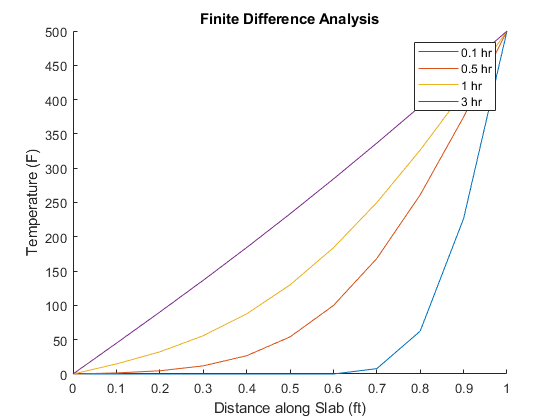
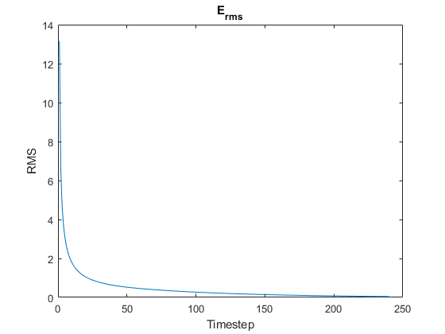
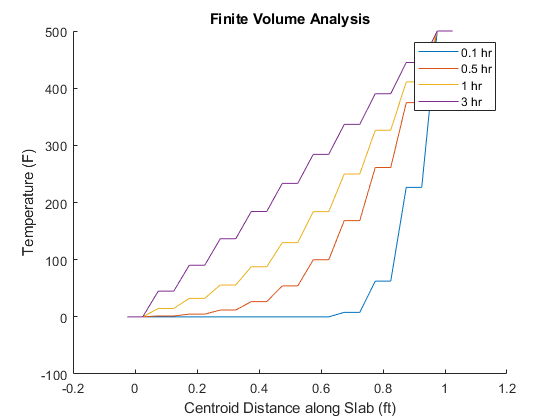
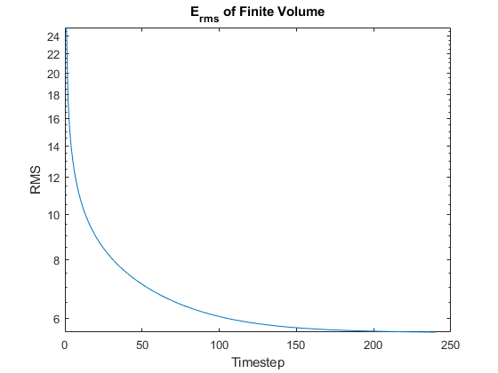
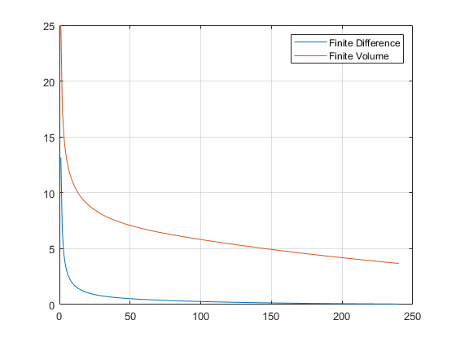

BENG 227 HW #2
Contents
HOUSEKEEPING
clear all close all clc
1b
Constants
mu = 0.1; L = 1; % Run parameters dx = 0.05; dt = 0.0125; % 1 indexed, accoutn for boundaries N_x = L / dx + 1; % Initial Conditions T_init = zeros(N_x,1); % Second derivative matrix d2dx2 = zeros(N_x,1); % Dirchlet B.C. also means 0 change at the boundary for i=2:1:N_x-1 d2dx2(i,i-1) = -1; d2dx2(i,i) = 2; d2dx2(i,i+1) = -1; end % divide by step squared d2dx2 = d2dx2 ./ (dx^2); % set d2dx2 to negative because row dim is inverted relative to cartesian... d2dx2 = -d2dx2; figure hold on xvec = [0:dx:L]; for time=[0.1, 0.5, 1, 3] N_t = time/dt + 1; T = zeros(N_x,N_t); for t=1:1:N_t % MATLAB IS 1 indexed, count idx 1 as t=0 if t == 1 T(:,t) = T_init; elseif t > 1 % Dirchlet B.C. T(1,t) = 0; T(N_x,t) = 500; T(:,t + 1) = T(:,t) + (dt * mu * d2dx2 * T(:,t)); end end plot(xvec,T(:,N_t)) end xlabel('Distance along Slab (ft)') ylabel('Temperature (F)') legend('0.1 hr','0.5 hr','1 hr','3 hr') title('Finite Difference Analysis') T_FTCS = T;
1c
Using T values from 1b, specifically over 3 hours...
for t=2:1:N_t deltaT = T(2:N_x-1,t+1) - T(2:N_x-1,t); Erms(t-1,:) = 1/(N_x-2) * sqrt(sum(deltaT .^2)); end tvec = 1:1:N_t-1; figure semilogy(tvec,Erms) title("E_r_m_s") xlabel("Timestep") ylabel("RMSE")
1f
1 indexed, accoutn for phantom cells
N_x = L / dx + 2; % Initial Conditions T_init = zeros(N_x,1); % Second derivative matrix d2dx2 = zeros(N_x,1); % Dirchlet B.C. also means 0 change at the boundary for i=2:1:N_x-1 d2dx2(i,i-1) = 1; d2dx2(i,i) = -2; d2dx2(i,i+1) = 1; end % divide by step squared d2dx2 = d2dx2 ./ (dx^2); figure hold on % Add R and L boundaries xvec = [-dx/2:dx:L+dx/2]; for time=[0.1, 0.5, 1, 3] N_t = time/dt + 1; T = zeros(N_x,N_t); for t=1:1:N_t % MATLAB IS 1 indexed, count idx 1 as t=0 if t == 1 T(:,t) = T_init; elseif t > 1 T(1,t) = -T(2,t); T(N_x,t) = (2 * 500) - T(N_x-1,t); T(:,t + 1) = T(:,t) + (dt * mu * d2dx2 * T(:,t)); % Dirchlet B.C. T(1,t + 1) = -T(2,t + 1); T(N_x,t + 1) = (2 * 500) - T(N_x-1,t + 1); end end plot(xvec,T(:,N_t)) end xlabel('Centroid Distance along Slab (ft)') ylabel('Temperature (F)') legend('0.1 hr','0.5 hr','1 hr','3 hr') title('Finite Volume Analysis') T_FVM = T;
1g
1h
Using T values from 1f, specifically over 3 hours...
for t=2:1:N_t deltaT = T(2:N_x-1,t+1) - T(2:N_x-1,t); Erms_vol(t-1,:) = 1/(N_x-2) * sqrt(sum(deltaT .^2)); end tvec = 1:1:N_t-1; figure semilogy(tvec,Erms_vol) title("E_r_m_s of Finite Volume") xlabel("Timestep") ylabel("RMSE") ylim([1 100]) grid on figure semilogy(tvec,Erms) hold on semilogy(tvec, Erms_vol) legend('Finite Difference','Finite Volume') grid on title('Comparison of E_r_m_s') xlabel("Timestep") ylabel("RMSE") 